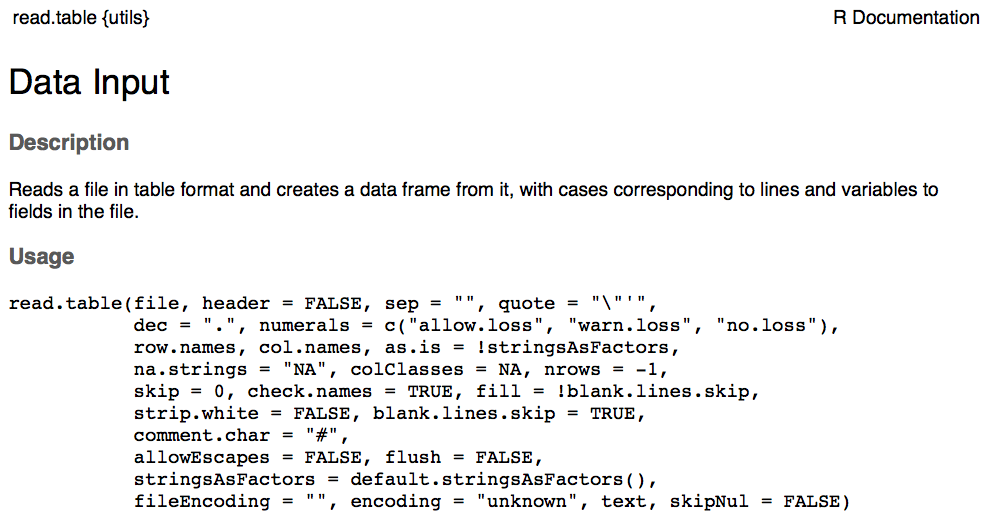
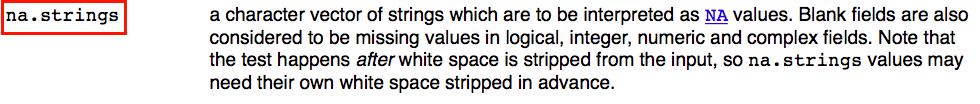

Chapter 6 Repairing a Broken Data Frame
Data can be messy, there are compatibility issues. For example, sharing data from a Mac to Windows or between computers set up in different continents can lead to weird datasets.
Let’s practice how to solve some common errors.
6.0.1 Fix a broken dataframe
# Read co2_broken.csv file into R and find the problems
CO2 <- read.csv("co2_broken.csv") # Overwrite CO2 object with broken CO2 data
head(CO2) # Looks messy
CO2 # Indeed!- This is probably what your data or downloaded data looks like.
- You can fix the data frame in R (or not…)
- Give it a try before looking at the solution!
- Work with your neighbours and have fun :)
Some useful functions:
?read.csvhead()str()class()unique()levels()which()droplevels()
Note: For these functions you have to put the name of the data object in
the parentheses (i.e. head(CO2)). Also remember that you can use “?”
to look up help for a function (i.e. ?str).
HINT: There are 4 problems!
Problem #1: The data appears to be lumped into one column
Solution:
Re-import the data, but specify the separation among entries. The sep argument tells R what character separates the values on each line of the file. Here, “TAB” was used instead of “,”.
Problem #2: The data does not start until the third line of the txt file, so you end up with notes on the file as the headings.
head(CO2) # The head() command allows you to see that the data has not been read in with the proper headingsSolution:
To fix this problem, you can tell R to skip the first two rows when reading in this file.
CO2 <- read.csv("co2_broken.csv", sep = "", skip = 2) # By adding the skip argument into the read.csv function, R knows to skip the first two rows
head(CO2) # You can now see that the CO2 object has the appropriate headingsProblem #3: “conc” and “uptake” variables are considered factors instead of numbers, because there are comments/text in the numeric columns.
str(CO2) # The str() command shows you that both 'conc' and 'uptake' are labelled as factors
class(CO2$conc)
unique(CO2$conc) # By looking at the unique values in this column, you see that both columns contain 'cannot_read_notes'
unique(CO2$uptake)
`?`(unique)Solution:
 
CO2 <- read.csv("co2_broken.csv", sep = "", skip = 2, na.strings = c("NA",
"na", "cannot_read_notes"))By identifying “cannot_read_notes” as NA data, R reads these columns properly. Remember that NA (capital!) stands for not available.
head(CO2)
str(CO2) # You can see that conc variable is now an integer and the uptake variable is now treated as numericProblem #4: There are only two treatments (chilled and nonchilled) but there are spelling errors causing it to look like 4 different treatments.
str(CO2) # You can see that 4 levels are listed for Treatment
levels(CO2$Treatment)
unique(CO2$Treatment) # The 4 different treatments are 'nonchilled', 'nnchilled', 'chilled', and 'chiled'Solution:
# You can use which() to find rows with the typo
# 'nnchilled'
which(CO2$Treatment == "nnchilled") # Row number ten
# You can then correct the error using indexing:
CO2$Treatment[10] <- "nonchilled"
# Alternatively, doing it with a single command:
CO2$Treatment[which(CO2$Treatment == "nnchilled")] <- "nonchilled"
# Now doing the same for 'chiled':
CO2$Treatment[which(CO2$Treatment == "chiled")] <- "chilled"Have we fixed the problem?